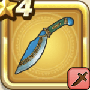

エンシェントククリ
攻略班 5.5点 / ヴァイパーファングスリープダガーアースエッジ
くわしい特徴
【レベル別習得スキル】 Lv1ヴァイパーファング（消費MP：5）刃に猛毒を宿し敵1体に威力130%の斬撃ダメージを与えたまに猛毒を与える Lv8スリープダガー（消費MP：9）敵1体に威力180%の斬撃ダメージを与えたまに眠りにさそう Lv20アースエッジ（消費MP：20）敵1体に威力230%のジバリア属性斬撃ダメージを与える Lv36攻撃時+2%の確率で転びを与える Lv40攻撃力+5 【限界突破スキル】 1凸アースエッジのダメージ+5% 2凸アースエッジのダメージ+5% 3凸アースエッジのダメージ+10% 4凸アースエッジのダメージ+10%